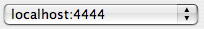

|
Save changed settings back to server. This will also restart
the PAW Server. |

|
Show Server Logfile
|
|
|
Connect to a PAW Server. The Server can be selected in the dropdown
list included in the toolbar. For more information about connecting to a
server see Remote connection. |
| 
|
Choose server to connect to or New Connection
to connect to an unlisted server. |

|
Show PAW Serve status information. |
|
|
Stop PAW Server. |

|
Start PAW Server. |

|
Shutdown the PAW Server. The PAW Server has to be started manually
afterwards (see Starting the server). |